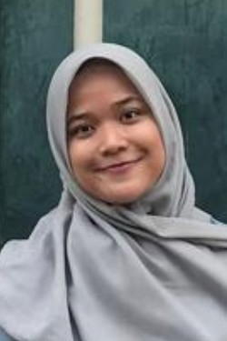
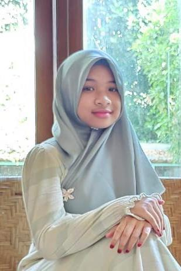

SILSILAH BANI KAMID
Data Per-tanggal 28 Mei 2024
-
KAMID
1 Januari 1935
s/d 6 November 2015
 KAMILAH
KAMILAH
1 Januari 1942
s/d 30 Mei 2021
-
 BAHRUDDIN
BAHRUDDIN
Anak Ke-1 Ibu kamilah
Boyolali, 8 September 1963
 SYARIFAH INDRIYATI
SYARIFAH INDRIYATI
Istri Pertama
Boyolali, 5 Mei 1995
s/d 18 Oktober 2021
 TITI SUGIHARTI
TITI SUGIHARTI
Istri Kedua
Boyolali, 12 September 1965
-
SYAFRUDDIN BUSTAN
Anak Ke-1 Ibu Syarifah Indriyati
Boyolali, 10 maret 1991
 ZEA SARAH TANTRI IRANI
ZEA SARAH TANTRI IRANI
Istri
Tanjung Pinang, 28 maret 1994
 NAURA AQILA GHASSANI
NAURA AQILA GHASSANI
Anak Ke-1 Ibu Zea Sarah
(Pekanbaru, 20 Januari 2019)
 IBRAHIM ALFARIZI
IBRAHIM ALFARIZI
Anak Ke-2 Ibu Zea Sarah
(Pekanbaru, 28 November 2020)
-
ARSYAD TAUFIQ
Anak Ke-2 Ibu Syarifah Indriyati
Pekanbaru, 25 Januari 1994
 ADIS PUTRI DELFI
ADIS PUTRI DELFI
Istri
Lampung, 1 Juni 1994
- AUDREY SABRIA ARSYAD
Anak Ke-1 Ibu Adis Putri Delfi
(Pekanbaru, 16 April 2022)
-
 RAIS HIDAYAT
RAIS HIDAYAT
Anak Ke-3 Ibu Syarifah Indriyati
Pekanbaru, 14 Oktober 1998
 FITRI MAIYANI HARAHAP
FITRI MAIYANI HARAHAP
Istri
Bukit Kemuning, 25 Februari 1997
 BAHIRA ALISHA HANUM
BAHIRA ALISHA HANUM
Anak Ke-1 Ibu Fitri Maryam H.
(Pekanbaru, 15 Juni 2023)
-
ZARAH FARHANI
Anak Ke-4 Ibu Syarifah Indriyati
14 Desember 2000
-
 NUR FATONI
NUR FATONI
Anak Ke-2 Ibu Kamilah
Boyolali, 14 Maret 1966
 ETIK IHTIYATMI
ETIK IHTIYATMI
Istri
Boyolali, 4 September 1969
 GHOZY IKBAR FATHONI
GHOZY IKBAR FATHONI
Anak Ke-1 Ibu Etik Ihtiyatmi
Boyolali, 21 Januari 2001
- DHIAULHAQ NAFIUL ALAM
Anak Ke-2 Ibu Etik Ihtiyatmi
Boyolali, 23 Maret 2003
 MUTIA SHABIHA AZZAHRA FATONI
MUTIA SHABIHA AZZAHRA FATONI
Anak Ke-3 Ibu Etik Ihtiyatmi
Boyolali, 14 Maret 2007
-
WAHYU PURNOMOJATI
Suami
Boyolali, 19 Desember 1964
 ENI WIDJAYATI
ENI WIDJAYATI
Anak Ke-3 Ibu Kamilah
Boyolali, 3 April 1968
-
 SHOFIYYUL FUAD
SHOFIYYUL FUAD
Anak Ke-1 Ibu Eni Widjayati
Boyolali, 15 November 1990
 AYU YULIANI HERA RAHMADEWI
AYU YULIANI HERA RAHMADEWI
Istri
Blora, 14 Juli 1993
 AHMAD EVREN ARKANA
AHMAD EVREN ARKANA
Anak Ke-1 Ibu Ayu Yuliani
Balikpapan, 29 Agustus 2022
-
RIQQOH KHOFIYA
Anak Ke-2 Ibu Eni Widjayati
Klaten, 27 Juni 1994
ANDIKA KUNCORO WIDAGDO
Suami
Boyolali, 2 Juli 1991
-
 AHMAD ADL BARELVI
AHMAD ADL BARELVI
Anak Ke-3 Ibu Eni Widjayati
Boyolali, 26 Mei 1996
-
 SUYANTO
SUYANTO
Suami
Boyolali, 4 Maret 1966
 USWATUN KHASANAH
USWATUN KHASANAH
Anak Ke-4 Ibu Kamilah
Boyolali, 15 September 1972
-
 ILHAM AKBAR RAMADHAN
ILHAM AKBAR RAMADHAN
Anak Ke-1 Ibu Uswatun Khasanah
Boyolali, 4 Januari 1998)
LUCKY ARISKA PUTRI
Istri
Surakarta, 29 Maret 1998
 ELZIN FAWWAS RAMADHAN
ELZIN FAWWAS RAMADHAN
Anak Ke-1 Ibu Lucky Ariska Putri
Surakarta, 19 April 2023
-
NABIL MISBAHUDDIN
Anak Ke-2 Ibu Uswatun Khasanah
11 September 2001
-
 MUHAMMAD NIZAM FAHURRAHMAN
MUHAMMAD NIZAM FAHURRAHMAN
Anak Ke-3 iIbu Uswatun Khasanah
31 Mei 2012
-
MUH. FATKHUL IHSAN
Anak Ke-5 Ibu Kamilah
(Boyolali, 3 Januari 1975)
 WARTINI
WARTINI
Istri
28 Agustus 1975
 ROID MUFLIH IHSANUDDIN
ROID MUFLIH IHSANUDDIN
Anak Ke-1 Ibu Wartini
Boyolali, 21 Desember 2002
 FIKRI DZAKY IHSANUDDIN
FIKRI DZAKY IHSANUDDIN
Anak Ke-2 Ibu Wartini
Boyolali, 4 Oktober 2004
 HILMI FALIH IHSANUDDIN
HILMI FALIH IHSANUDDIN
Anak Ke-3 Ibu Wartini
Boyolali, 19 Januari 2015
-
 BADRUS ZAMAN
BADRUS ZAMAN
Anak Ke-6 Ibu Kamilah
Boyolali, 1 Juli 1977
 SRI UTAMI
SRI UTAMI
Istri
Sukoharjo, 21 Januari 1976
- ASMA' HUWAIDA ZAMI
Anak Ke-1 Ibu Sri Utami
Sukoharjo, 3 Desember 2003
- KHAULA TSABITA ZAMI
Anak Ke-2 Ibu Sri Utami
Sukoharjo, 30 Mei 2006
- TSALITSA RASYIDA ZAMI
Anak Ke-3 Ibu Sri Utami
Boyolali, 14 September 2013
-
 SAFRUDDIN
SAFRUDDIN
Suami
Karanganyar, 17 Februari 1958
FITROTUN RAHMAWATI
Anak Ke-7 Ibu Kamilah
Boyolali, 27 September 1979
- MUHAMMAD ZIDAN DICKY NASUHA
Anak Ke-1 Ibu Fitrotun Rahmawati
Karanganyar, 2 Mei 2006
- NAZLA UZILFATIS SAFIRA
Anak Ke-2 Ibu Fitrotun Rahmawati
Surakarta, 7 Juli 2012